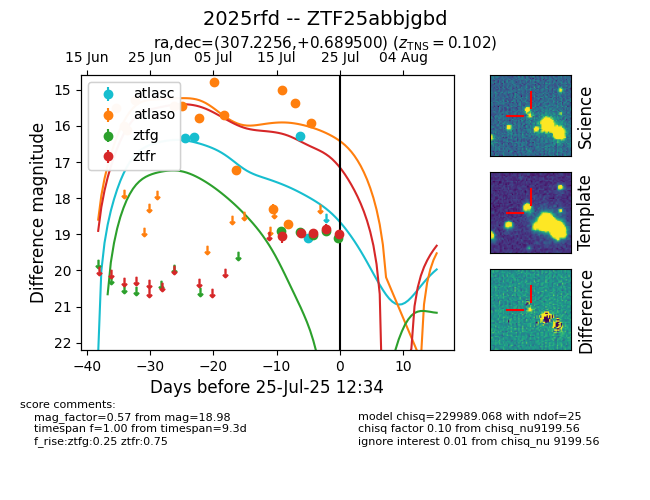

Target 2025rfd at 2025-07-25 12:34, see:
FINK: fink-portal.org/2025rfd
Lasair: lasair-ztf.lsst.ac.uk/objects/2025rfd
ALeRCE: alerce.online/object/2025rfd
TNS: wis-tns.org/object/2025rfd
YSE: ziggy.ucolick.org/yse/transient_detail/2025rfd
alt names
ZTF25abbjgbd (ztf,fink)
2025rfd (tns,yse)
coordinates:
equatorial (ra, dec) = (307.2256,+0.68950)
galactic (l, b) = (45.2451,-21.20249)
photometry
last atlasc=19.09, atlaso=15.91, ztfg=19.10, ztfr=18.98
4 atlasc, 15 atlaso, 5 ztfg, 5 ztfr detections
